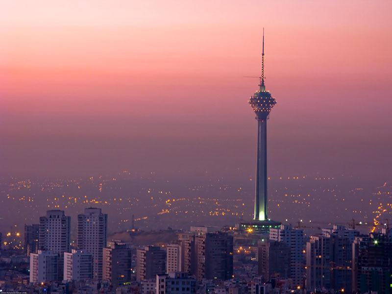
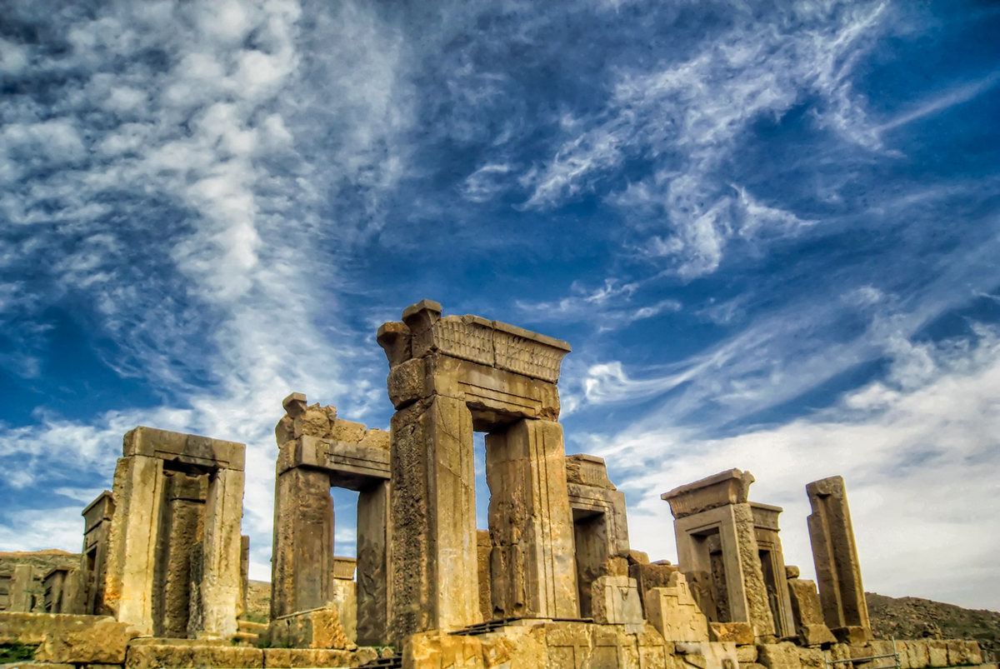
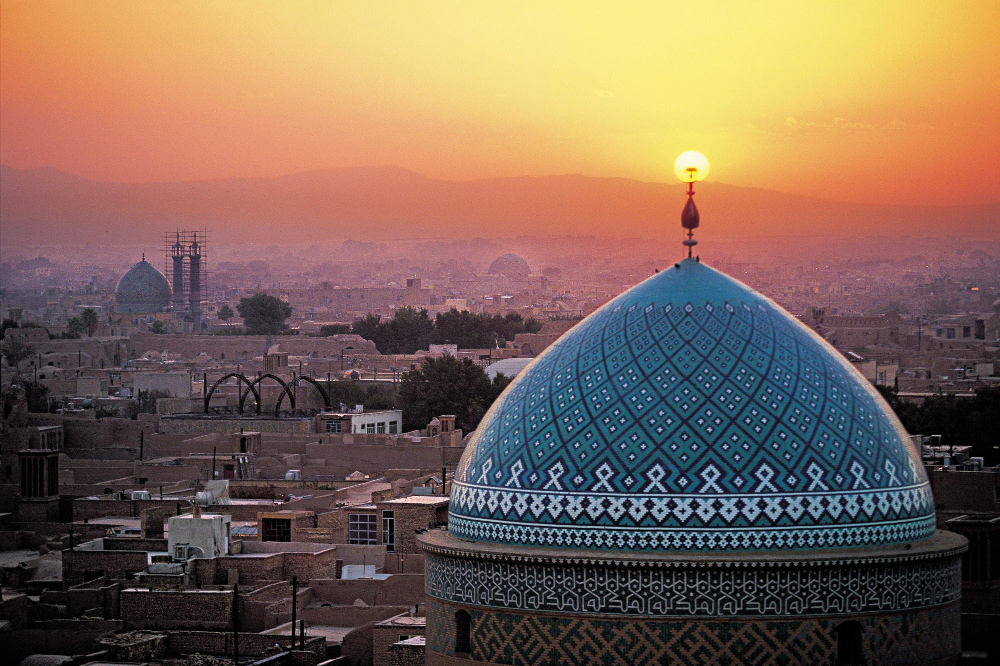
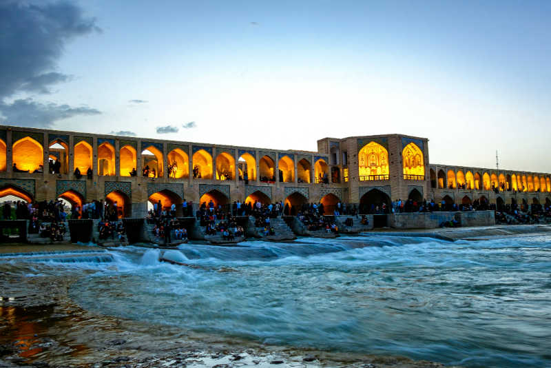

Destinations in Iran
Iran is home to one of the oldest civilizations on Earth, where turquoise-domed mosques, glittering palaces, and the tombs of long gone poets reveal the mysteries and intrigues of the ancients. Here, you can find more information about the top 4 destinations in Iran.
Tehran
Tehran is the capital city of Iran. A bustling metropolis of 14 million people, it is situated at the foot of the towering Alborz mountain range. Tehran is a cosmopolitan city, with great museums, parks, restaurants, warm friendly people. It deserves at least a few days of your Iranian itinerary.
Tehran is located on the steep southern slopes of the Elburz mountain range, which traces an arc along the coast of the Caspian Sea in northern Iran. Its highest peak, Mount Damavand (Demavend), has an elevation of more than 18,400 feet (5,600 metres) and is visible from Tehran on clear days. The highest point in Iran, Damavand is also higher than any other peak among the summits to its west in Asia and Europe.
Tehran is a relatively old city; as such, it has an architectural tradition unique to itself. Archaeological investigations and excavations in Tehran demonstrate that this area was home to civilizations as far back as 6,000 years BC in the village of Ray which is now incorporated into the city. Its central Golestan Palace complex, with its ornate rooms and marble throne, was the seat of power of the Qajar dynasty. The National Jewelry Museum holds many of the Qajar monarchs’ jewels, while the National Museum of Iran has artifacts dating back to Paleolithic times. The Milad Tower offers panoramic views over the city.

Shiraz
Celebrated as the heartland of Persian culture for over 2000 years, Shiraz has become synonymous with education, nightingales, poetry and wine. It was one of the most important cities in the medieval Islamic world and was the Iranian capital during the Zand dynasty (AD 1747–79), when many of its most beautiful buildings were built or restored.
A city of poets, Shiraz is home to the graves of Hafez and Sa’di, both major visiting site for Iranians. It’s also home to splendid gardens, exquisite mosques and whispered echoes of ancient sophistication that reward those who linger beyond the customary excursion to nearby Persepolis, the ruined 6th-century-B.C. capital to the northeast, with its immense gateways, columns and friezes – the area’s major tourist destination.
The most important monument in Persepolis is undoubtedly the tomb of Cyrus the Great. It has seven broad steps leading to the sepulcher, which measures 534m. in length by 531m in width and has a low and narrow entrance. When Alexander the Great looted and destroyed Persepolis, he paid a visit to the tomb of Cyrus and inside he found a golden bed, a table set with drinking vessels, a golden coffin, some ornaments studded with precious stones and an inscription of the tomb.
Yazd
The desert city of Yazd is as picturesque as Middle Eastern cities come. Its well-preserved mud brick old town, distinctive badgirs, or wind-catchers, dotted around the skyline, and numerous historical sites make it a necessary destination for any tourist visiting Iran. On a flat plain ringed by mountains, the city is wedged between the northern Dasht-e Kavir and southern Dasht-e Lut and is every inch a city of the desert. It may not have the big-ticket sights of Esfahan or Shiraz, but, with its atmospheric alleyways and centuries of history, it exceeds both in its capacity to enchant. Yazd warrants a lazy approach – rambling around the maze of historic lanes (referred to locally as Yazd's 'historical texture'), popping into random teahouses or pausing to work out calligraphic puzzles in the city's exquisite tilework.
Originally settled 5000 years ago, Yazd has an interesting mix of people, 10% of whom follow the ancient religion of Zoroastrianism. Yazd is the centre of Zoroastrianism in Iran, and is home to several sites of religious and historic interest. The Ateshkadeh, or Fire Temple, is the most important, containing a central fire that has allegedly been burning since the 5th century A.D. Another fascinating Zoroastrian site is the ominous-sounding Towers of Silence located just outside the city and certainly worth a visit.

Isfahan
Among the cities of Iran, Isfahan is like a piece of jewelry that despite the historical fluctuations in the area has still retained its luster and glory throughout the centuries. The city is so vibrant that it seems as if it has been born today and yet it is so original that it looks as though it has always existed. The city’s rich culture and beautiful nature are in such perfect harmony that one seems to be a reflection of the other. Isfahan is an ultimate expression of the Iranian-Islamic Culture.
Esfahan is Iran’s top tourist destination for a good reason. Its profusion of tree-lined boulevards, Persian gardens and important Islamic buildings gives it a visual appeal unmatched by any other Iranian city, and the many artisans working here underpin its reputation as a living museum of traditional culture. Walking through the historic bazaar, over the picturesque bridges and across the Unesco-listed central square are sure to be highlights of a holiday.
Isfahan is known for its Persian architecture. In the huge Naqsh-e Jahan Square is the 17th-century Imam (Shah) Mosque, whose dome and minarets are covered with mosaic tiles and calligraphy. Ali Qapu Palace, built for Shah Abbas and completed in the late 16th century, has a music room and a verandah overlooking the square’s fountains. Sheikh Lotfollah Mosque is known for its intricate tiling.